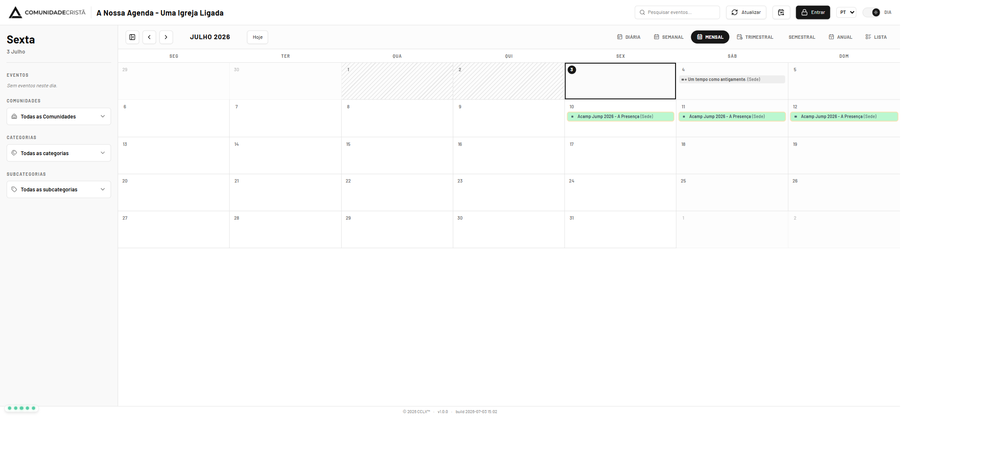
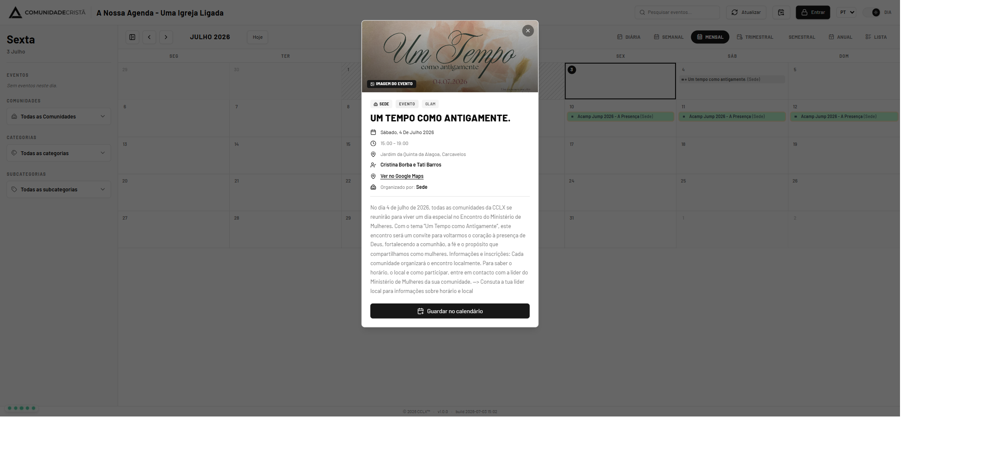
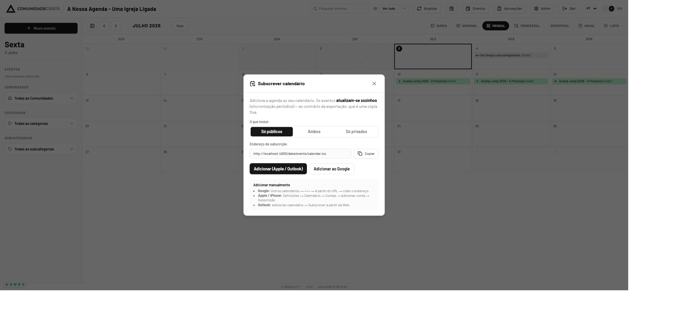
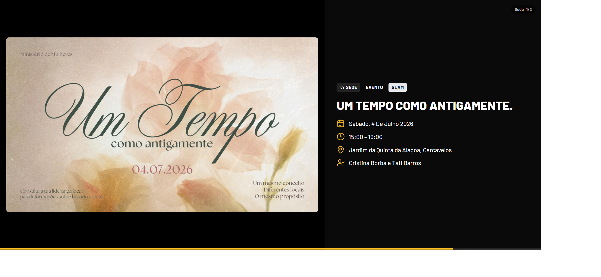

1. Bem-vindo
A Agenda CCLX mostra, num só sítio, todos os eventos públicos das comunidades da CCLX. Pode consultá-la livremente, sem iniciar sessão. Este manual mostra, passo a passo, como tirar o máximo partido dela.
Aceda em https://agenda.cclx.pt a partir de qualquer telemóvel,
tablet ou computador.
2. O ecrã principal
Ao abrir a agenda vê o calendário do mês, com os eventos assinalados nos respetivos dias. À esquerda está a barra lateral com o dia selecionado e os filtros; no topo, a pesquisa e as opções gerais.

- Os eventos que ocupam vários dias (ex.: acampamentos) aparecem em todos os dias que abrangem.
- Use Anterior / Seguinte (‹ ›) para mudar de período e Hoje para voltar ao dia atual.
3. Mudar de vista
No canto superior direito pode escolher como quer ver a agenda:
| Vista | Quando é útil |
|---|---|
| Diária | Ver ao pormenor os eventos de um único dia. |
| Semanal | Planear a semana, com os eventos por dia. |
| Mensal | Visão geral do mês (vista por omissão). |
| Trimestral / Semestral / Anual | Visão de longo prazo; clique num dia para ver os seus eventos. |
| Lista | Uma lista contínua de eventos, agrupada por mês. |
4. Filtrar e pesquisar
Para encontrar rapidamente o que procura:
- Pesquisa — escreva no campo “Pesquisar eventos…” no topo (por título, descrição, categoria ou comunidade).
- Filtro por Comunidade — na barra lateral, escolha uma ou mais igrejas.
- Filtro por Categoria e Subcategoria — restrinja por tipo de evento (ex.: culto, jovens, formação).
5. Ver os detalhes de um evento
Clique em qualquer evento (no calendário ou na barra lateral) para abrir o seu cartão com toda a informação: imagem, data, hora, local, contacto, inscrições e descrição.

- Ver no Google Maps — abre a localização do evento no mapa.
- Guardar no calendário — adiciona este evento ao seu calendário pessoal (ficheiro
.ics).
6. Subscrever a agenda no seu calendário
Em vez de guardar evento a evento, pode subscrever a agenda inteira: os eventos passam a aparecer no seu Google Calendar, Apple ou Outlook e atualizam-se sozinhos.

- Clique no ícone de subscrever calendário no topo.
- Escolha “Só públicos”.
- Use Adicionar ao Google / Adicionar (Apple / Outlook), ou copie o endereço e adicione-o manualmente na sua aplicação de calendário.
7. O Loop na televisão
Cada comunidade pode ter uma página Loop — um carrossel de cartazes, em ecrã inteiro, ideal para mostrar numa televisão à entrada. Passa automaticamente pelos eventos em destaque, sem parar.

Peça à sua comunidade o endereço do Loop (por exemplo
agenda.cclx.pt/loop/Sede) e abra-o no navegador da TV em ecrã inteiro.
8. Idioma e aspeto
- Idioma — no topo pode mudar entre Português, Inglês, Francês e Espanhol.
- Tema — alterne entre modo claro e modo noite no botão junto ao idioma.
- Telemóvel — no telemóvel, toque no ícone de menu para abrir a barra lateral de filtros.
9. Perguntas frequentes
| Pergunta | Resposta |
|---|---|
| Preciso de conta para ver a agenda? | Não. A agenda pública é aberta a todos. |
| Porque não vejo um evento? | Só aparecem eventos já publicados. Alguns eventos podem ser privados e visíveis apenas a pessoas autorizadas. |
| Os eventos subscritos atualizam-se? | Sim — a subscrição sincroniza periodicamente. A exportação de um evento é uma cópia fixa. |
| Como vejo um evento no mapa? | Abra o detalhe do evento e clique em “Ver no Google Maps”. |
Agenda CCLX — Manual do Público · Versão 1.0.0 · © 2026 Comunidade Cristã de Lisboa (CCLX™).